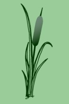

|
Licton Springs Park  |
Sights in Licton Springs Located between 97th Street, Ashworth and Densmore Avenues North, Licton Springs Park is the namesake and heart of the Licton Springs neighborhood. The park, as well as the neighborhood, derives its name from the mineral spring that still flows at the park. The park is an ideal spot for a stroll around its grassy borders or an exploration into its wetland core. Licton Springs was used by Native Americans who gave it its name. Later, there was an attempt to develop it as a spa. Subsequently, it was deeded to the city of Seattle as a park. Learn more about its Native American, development and all-around history.
Licton Springs neighborhood is privileged to have not one, but two parks: Licton Springs Park and Mineral Springs Park (formerly North Park). Mineral Springs Park is located between N. 105th and N. 107th, adjacent to Northgate Way. If you passed by this park while walking on 105th Street, you may have noticed an abundance of disc golfers shuffling between the large, old trees that grace this park. However, if you passed this park on 107th, perhaps while you were cutting over to I-5, you probably didn't notice a park at all. Today, the north end of the park looks remarkably like an empty lot. There used to be a house, known as the Kelm House, in this currently empty lot at the south corner of 107th and Northgate Way. Although it's hard to picture it now, this lot was a small farm of sorts where the owners raised chickens and grew fruit trees. The Aurora-Licton neighborhood plan called for the preservation of Kelm House but the Department of Parks and Recreation did not approve those plans. The house has since been auctioned off and removed. However, the Parks Department did approve that the surrounding grounds be developed as a decorative sculpture garden. The Department of Neighborhoods approved 25,000 dollars which has been used to gather community input and develop a landscape design. The plan for Mineral Springs Park is to develop the north end of the park while maintaining the existing disc golf course at the south end of the park. With the passage of the ProParks levy, money has been made available to begin to redevelop the park. (More information on the ProParks Mineral Springs project is available at the city of Seattle's website.)
What is now a truly unique local treasure began in 1909, when James A. and Marietta Pilling, parents of the late Charles (Chuck) Pilling moved into the house at North 90th Street near Densmore that had been built by the Denny family in the 1880s. At around 1933, Chuck Pilling dammed the creek that runs through the property from Licton Springs. This enabled him to provide a habitat that still exists and sustains a broad assortment of waterfowl today. Chuck attracted worldwide attention as the first successful breeder of the hooded merganser, bufflehead and harlequin ducks. Chuck's hobby has turned into a major community attraction. With people stopping to look at the unusual assortment of water birds, both tame and wild it is a truly unique treasure enjoyed by the entire community. Since the recent death of Chuck Pilling, the community and Pilling's family are working to insure that this santuary is preserved for future generations of people and birds to enjoy. If you want to find out more about these efforts, and perhaps lend a hand, e-mail Wanda Fullner. If you want to volunteer to help feed the ducks e-mail Colleen Simpson. A memorial fund has been establish to help cover ongoing expenses of feeding and caring for the birds. The family greatly appreciates the many donations they have received so far. Donations may be sent to You can read more about Pilling's Pond in Currents, or in the Seattle Times, or Post-Intelligencer articles. The Wilson Pacific School is located between 92nd and 90th streets and Wallingford Ave N, south of Licton Springs Park. This site has recently been graced with a mural of Chief Seattle. The future use of the school buildings is still up in the air. If you want help affect the course of its future you can contact Liz Kearns of the Licton Springs Community Council to see how you can help. Also in Licton Springs...
Also located in Licton Springs is North Seattle Community College. Welcome
| Local Interest | Neighborhood in Action |